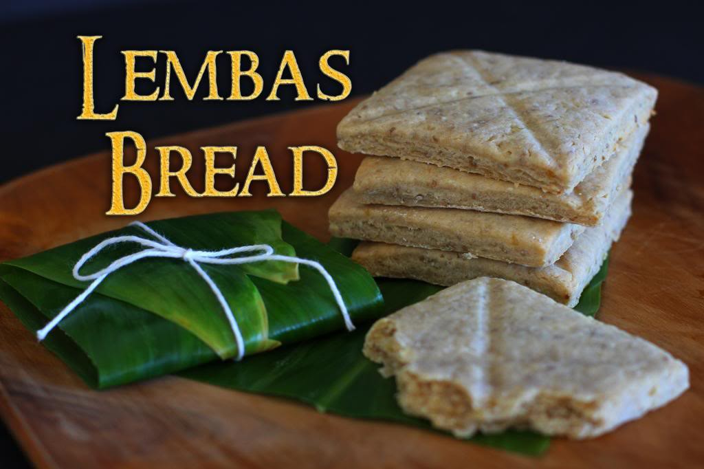

Lembas Bread

Description
One small bite is enough to fill the stomach of a grown man.
Ingredients:
- 2 cups of finely ground Elven flour (harvested under the light of the Two Trees)
- 1/2 cup of honey (collected from the Beorning bees)
- 1/2 cup of Elven butter (from cows with a penchant for poetry)
- 1/4 cup of dried Elven waybread crumbs (from the Last Homely House)
- A dash of starlight (optional but highly recommended)
Instructions:
- Begin in a serene glade deep within Lothlórien, where the air is filled with the scent of blossoms.
- In a mixing bowl, blend the Elven flour and honey until it forms a dough as smooth as Galadriel's speech.
- Knead in the Elven butter, taking care to infuse it with the grace of the Eldar.
- Gently fold in the dried waybread crumbs, which contain the wisdom of countless ages.
- Divide the dough into squares, each just large enough to sustain a weary traveler.
- Use an Elven leaf pattern to mark each square for that touch of Rivendell elegance.
- Bake in the soft glow of the Evening Star at 350 degrees until the edges are golden brown.
- Cool the Lembas Bread on a bed of Elanor petals and let it rest beneath the light of the Evenstar.
- Wrap each square in a leathery Elven leaf for the journey ahead.
Lembas Bread is known for its sustaining power, so one square should keep you fueled for an entire day's adventure. Remember, it's not just bread; it's the essence of Elvish grace and wisdom in culinary form. Enjoy your travels!
Return